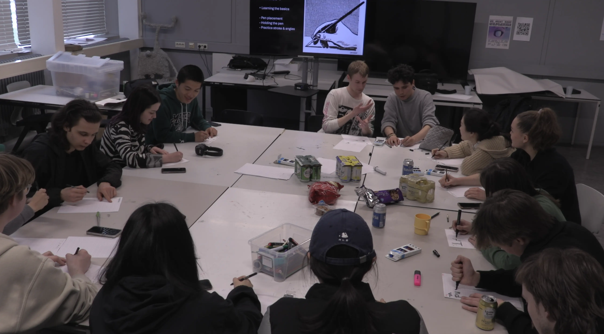

Sinisdex is a variable font which has an axis based on left and right handed calligraphy ductus. 90% of the population of people prefer to use their right hand for writing and working. Therefore, tools and certain technological developments are designed primarily for them. While the 10% of the population prefer to use their left hand, they have to learn to adapt to these biases. Maybe thats why the stereotype of left handed people being more creative… 🤷🏻

The aim of the workshop is to teach people about handedness by playing around using calligraphy pens in the opposite hand.
An experiment to use handwriting as the centerline of the plotted lettershapes and calligraphy pen to translate the bias by changing the angle of the nib.
Aa Bb Cc Dd Ee Ff Gg Hh Ii Jj Kk Ll Mm Nn
Oo Pp Qq Rr Ss Tt Uu Vv Ww Xx Yy Zz
1234567890 .,-
Aa Bb Cc Dd Ee Ff Gg Hh Ii Jj Kk Ll Mm Nn
Oo Pp Qq Rr Ss Tt Uu Vv Ww Xx Yy Zz
1234567890 .,-